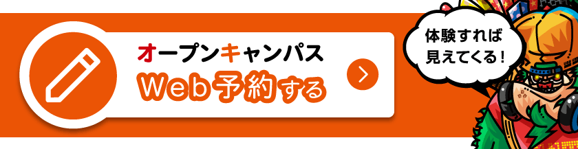

ITは、すべての仕事につながる世界。
IT・デジタルコンテンツを基礎から学ぶ、沖縄の専門学校
ITは、すべての仕事につながる世界。
IT・デジタルコンテンツを基礎から学ぶ、沖縄の専門学校
| サイバーセキュリティ科 |
|---|
| Cyber Security |
| 昼間：2年 定員：20名 |
サイバーとは、「コンピューターやネットワークに関すること」をさします。 コンピュータネットワークはここ数年で技術や運営方法が大きく変わり 、仮想化技術やクラウドの技術が仕事だけでなく、皆さんの生活を支えています。 「先端の知識を学び、現場で使える技術を学ぶ」それがサイバーセキュリティ科です。
| 将来の職業 |
|---|
| 1.セキュリティエンジニア |
| 2.ネットワークエンジニア |
| 3.サーバーエンジニア |
| 4.カスタマーエンジニア |
| 5.インフラエンジニアなど |
| こんな人にオススメ！ | |
|---|---|
| 1.ホワイトハッカーになりたい | 6.社会を支える仕事がしたい |
| 2.機械いじりが好き | 7.有名企業で働きたい |
| 3.パソコンを自在に使いたい | 8.専門的な知識が欲しい |
| 4.職場に有利な技術が欲しい | 9かっこいいオフィスで働きたい |
| 5.県内外で働きたい | など |

充実した実習素材に直接触れることで、より実践に即した授業内容になっています。

インターネットを使って提供されるサービスの基盤となる「クラウド」を支える技術も学びます。
セキュリティを学習するうえでは様々な技術・知識が必要とな ります。この講義ではSEA/Jの公式教材を用いてネットワークや ファイヤーウォール、侵入検知システム、VPNなどのアクセス コントロールや機密性確保に必要な技術などを習得します。ま たハッキング用のラボを用いて、様々なハッキング手段を学ぶ ことでセキュリティを理解し、強固なシステムを構築できるよ うになります。
Webサービスやオンラインゲームのバックエンドとして欠か せないものとなっている「クラウド」。こｎ講義ではAWS (Amazon Web Service)やGCP(Google Cloud Platform)などを 使用して、ネットワーク経由でのコンピューティング、データ ベース、ストレージ、アプリケーションなど様々なサービスを 構築・管理・開発を行うインフラエンジニアの基礎を習得し ます。
ソフウェアによって仮想化されることにより自由に設計でき 柔軟性の高いシステムを構築できる「仮想化技術」。仮想 化技術を使うことで複数のサーバやOS、開発環境の構築や 設定を何度でも手軽にできるようになります。この講義で は、実際の環境を使用し学ぶことにより就職した際の強い 自信にも繋がります。
開発現場で使われているサーバ向けOSであるLinux について学習。具体的にはファイルシステムの構築 、基本コマンド、ユーザー管理、シェルプログラミ ングなど、サーバ管理者としての基本操作方法を学 びます
SEA/J CSPMの公式トレーニングを用いてITスキル標 準(ITSS)の情報セキュリティ分野レベル2〜4に対応 したファイアウォール、侵入検知システム、VPNなど のアクセスコントロールや機密性確保に必要な知識、 技術を習得します
Webサービスやオンラインゲームのバックエンドとし て欠かせないものとなっているクラウドコンピュー ティングをAWS(Amazon Web Service)を操作し構築 や管理を行いインフラエンジニアの基礎を習得しま す。
LAMP[Linux、Apache HTTP Server(Webサーバ)、MySQ L(データベース)、Perl、PHP、Python(プログラミン グ言語)の頭文字をつなげた用語]環境の構築・設定は インターネットサーバ構築業務に欠かせないものであ り、アイカレで実践的に学ぶことにより就職した際に 強い自信に繋がります。アイカレでは、このWebアプリ ケーションの基盤となるオープンソースソフトウェア の組み合わせを、実習を通して効率良く身に付けます 。
オープンキャンパスに行ってみよう！！
